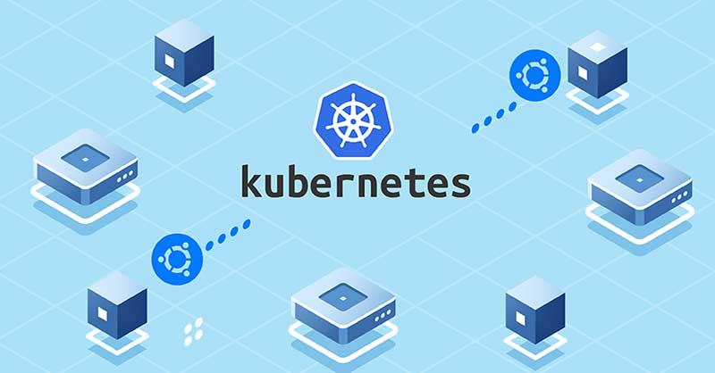
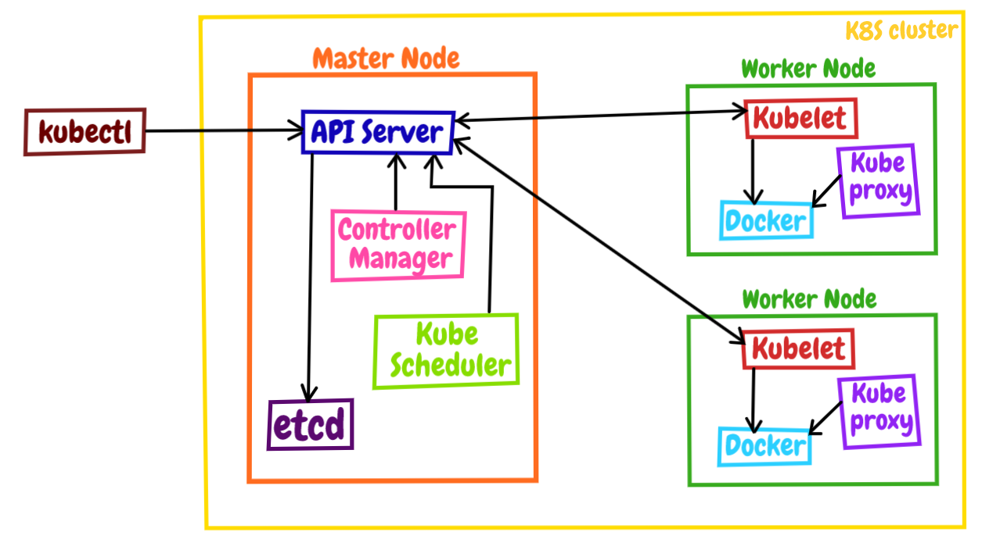
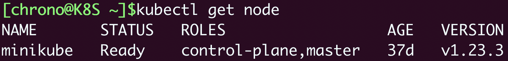
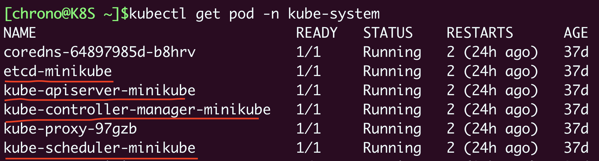
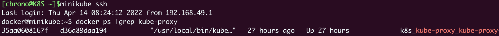
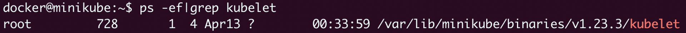
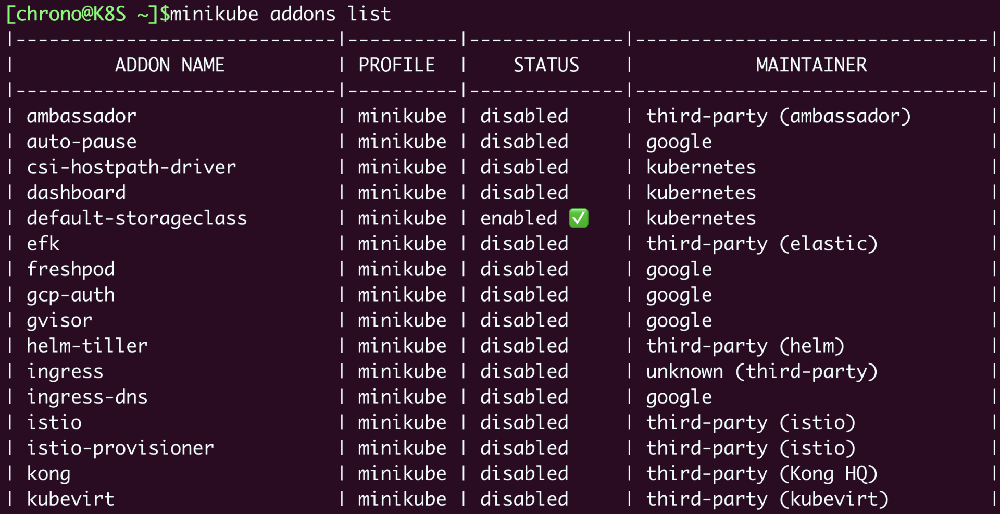
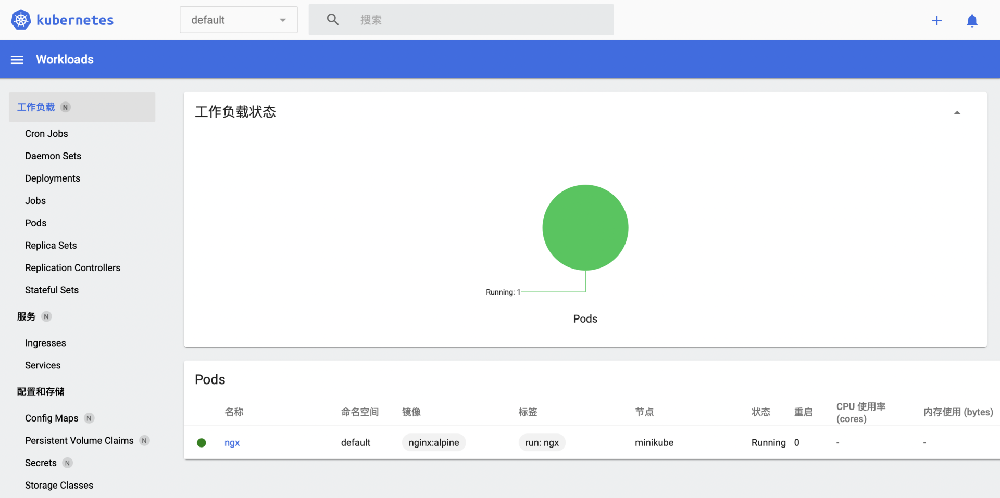
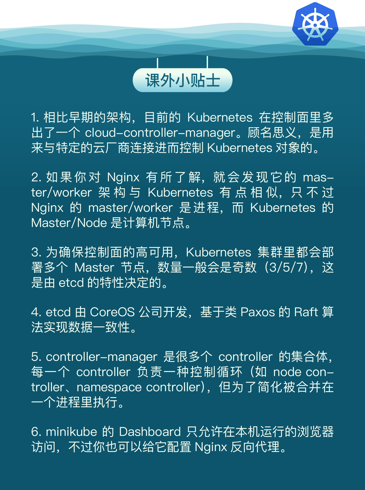

- 00 开篇词 迎难而上，做云原生时代的弄潮儿.md.html
- 00 课前准备 动手实践才是最好的学习方式.md.html
- 01 初识容器：万事开头难.md.html
- 02 被隔离的进程：一起来看看容器的本质.md.html
- 03 容器化的应用：会了这些你就是Docker高手.md.html
- 04 创建容器镜像：如何编写正确、高效的Dockerfile.md.html
- 05 镜像仓库：该怎样用好Docker Hub这个宝藏.md.html
- 06 打破次元壁：容器该如何与外界互联互通.md.html
- 07 实战演练：玩转Docker.md.html
- 08 视频：入门篇实操总结.md.html
- 09 走近云原生：如何在本机搭建小巧完备的Kubernetes环境.md.html
- 10 自动化的运维管理：探究Kubernetes工作机制的奥秘.md.html
- 11 YAML：Kubernetes世界里的通用语.md.html
- 12 Pod：如何理解这个Kubernetes里最核心的概念？.md.html
- 13 Job_CronJob：为什么不直接用Pod来处理业务？.md.html
- 14 ConfigMap_Secret：怎样配置、定制我的应用.md.html
- 15 实战演练：玩转Kubernetes（1）.md.html
- 16 视频：初级篇实操总结.md.html
- 17 更真实的云原生：实际搭建多节点的Kubernetes集群.md.html
- 18 Deployment：让应用永不宕机.md.html
- 19 Daemonset：忠实可靠的看门狗.md.html
- 20 Service：微服务架构的应对之道.md.html
- 21 Ingress：集群进出流量的总管.md.html
- 22 实战演练：玩转Kubernetes（2）.md.html
- 23 视频：中级篇实操总结.md.html
- 24 PersistentVolume：怎么解决数据持久化的难题？.md.html
- 25 PersistentVolume + NFS：怎么使用网络共享存储？.md.html
- 26 StatefulSet：怎么管理有状态的应用？.md.html
- 27 滚动更新：如何做到平滑的应用升级降级？.md.html
- 28 应用保障：如何让Pod运行得更健康？.md.html
- 29 集群管理：如何用名字空间分隔系统资源？.md.html
- 30 系统监控：如何使用Metrics Server和Prometheus？.md.html
- 31 网络通信：CNI是怎么回事？又是怎么工作的？.md.html
- 32 实战演练：玩转Kubernetes（3）.md.html
- 33 视频：高级篇实操总结.md.html
- 加餐 docker-compose：单机环境下的容器编排工具.md.html
- 加餐 谈谈Kong Ingress Controller.md.html
- 结束语 是终点，更是起点.md.html
- 捐赠
10 自动化的运维管理：探究Kubernetes工作机制的奥秘
你好，我是Chrono。
在上一次课里，我们看到容器技术只实现了应用的打包分发，到运维真正落地实施的时候仍然会遇到很多困难，所以就需要用容器编排技术来解决这些问题，而Kubernetes是这个领域的唯一霸主，已经成为了“事实标准”。
那么，Kubernetes凭什么能担当这样的领军重任呢？难道仅仅因为它是由Google主导开发的吗？
今天我就带你一起来看看Kubernetes的内部架构和工作机制，了解它能够傲视群雄的秘密所在。
云计算时代的操作系统
前面我曾经说过，Kubernetes是一个生产级别的容器编排平台和集群管理系统，能够创建、调度容器，监控、管理服务器。
容器是什么？容器是软件，是应用，是进程。服务器是什么？服务器是硬件，是CPU、内存、硬盘、网卡。那么，既可以管理软件，也可以管理硬件，这样的东西应该是什么？
你也许会脱口而出：这就是一个操作系统（Operating System）！
没错，从某种角度来看，Kubernetes可以说是一个集群级别的操作系统，主要功能就是资源管理和作业调度。但Kubernetes不是运行在单机上管理单台计算资源和进程，而是运行在多台服务器上管理几百几千台的计算资源，以及在这些资源上运行的上万上百万的进程，规模要大得多。

所以，你可以把Kubernetes与Linux对比起来学习，而这个新的操作系统里自然会有一系列新名词、新术语，你也需要使用新的思维方式来考虑问题，必要的时候还得和过去的习惯“说再见”。
Kubernetes这个操作系统与Linux还有一点区别你值得注意。Linux的用户通常是两类人：Dev和Ops，而在Kubernetes里则只有一类人：DevOps。
在以前的应用实施流程中，开发人员和运维人员分工明确，开发完成后需要编写详细的说明文档，然后交给运维去部署管理，两者之间不能随便“越线”。
而在Kubernetes这里，开发和运维的界限变得不那么清晰了。由于云原生的兴起，开发人员从一开始就必须考虑后续的部署运维工作，而运维人员也需要在早期介入开发，才能做好应用的运维监控工作。
这就会导致很多Kubernetes的新用户会面临身份的转变，一开始可能会有点困难。不过不用担心，这也非常正常，任何的学习过程都有个适应期，只要过了最初的概念理解阶段就好了。
Kubernetes的基本架构
操作系统的一个重要功能就是抽象，从繁琐的底层事务中抽象出一些简洁的概念，然后基于这些概念去管理系统资源。
Kubernetes也是这样，它的管理目标是大规模的集群和应用，必须要能够把系统抽象到足够高的层次，分解出一些松耦合的对象，才能简化系统模型，减轻用户的心智负担。
所以，Kubernetes扮演的角色就如同一个“大师级别”的系统管理员，具有丰富的集群运维经验，独创了自己的一套工作方式，不需要太多的外部干预，就能够自主实现原先许多复杂的管理工作。
下面我们就来看看这位资深管理员的“内功心法”。
Kubernetes官网上有一张架构图，但我觉得不是太清晰、重点不突出，所以另外找了一份（图片来源）。虽然这张图有点“老”，但对于我们初学Kubernetes还是比较合适的。

Kubernetes采用了现今流行的“控制面/数据面”（Control Plane / Data Plane）架构，集群里的计算机被称为“节点”（Node），可以是实机也可以是虚机，少量的节点用作控制面来执行集群的管理维护工作，其他的大部分节点都被划归数据面，用来跑业务应用。
控制面的节点在Kubernetes里叫做Master Node，一般简称为Master，它是整个集群里最重要的部分，可以说是Kubernetes的大脑和心脏。
数据面的节点叫做Worker Node，一般就简称为Worker或者Node，相当于Kubernetes的手和脚，在Master的指挥下干活。
Node的数量非常多，构成了一个资源池，Kubernetes就在这个池里分配资源，调度应用。因为资源被“池化”了，所以管理也就变得比较简单，可以在集群中任意添加或者删除节点。
在这张架构图里，我们还可以看到有一个kubectl，它就是Kubernetes的客户端工具，用来操作Kubernetes，但它位于集群之外，理论上不属于集群。
你可以使用命令 kubectl get node 来查看Kubernetes的节点状态：
kubectl get node

可以看到当前的minikube集群里只有一个Master，那Node怎么不见了？
这是因为Master和Node的划分不是绝对的。当集群的规模较小，工作负载较少的时候，Master也可以承担Node的工作，就像我们搭建的minikube环境，它就只有一个节点，这个节点既是Master又是Node。
节点内部的结构
Kubernetes的节点内部也具有复杂的结构，是由很多的模块构成的，这些模块又可以分成组件（Component）和插件（Addon）两类。
组件实现了Kubernetes的核心功能特性，没有这些组件Kubernetes就无法启动，而插件则是Kubernetes的一些附加功能，属于“锦上添花”，不安装也不会影响Kubernetes的正常运行。
接下来我先来讲讲Master和Node里的组件，然后再捎带提一下插件，理解了它们的工作流程，你就会明白为什么Kubernetes有如此强大的自动化运维能力。
Master里的组件有哪些
Master里有4个组件，分别是apiserver、etcd、scheduler、controller-manager。

apiserver是Master节点——同时也是整个Kubernetes系统的唯一入口，它对外公开了一系列的RESTful API，并且加上了验证、授权等功能，所有其他组件都只能和它直接通信，可以说是Kubernetes里的联络员。
etcd是一个高可用的分布式Key-Value数据库，用来持久化存储系统里的各种资源对象和状态，相当于Kubernetes里的配置管理员。注意它只与apiserver有直接联系，也就是说任何其他组件想要读写etcd里的数据都必须经过apiserver。
scheduler负责容器的编排工作，检查节点的资源状态，把Pod调度到最适合的节点上运行，相当于部署人员。因为节点状态和Pod信息都存储在etcd里，所以scheduler必须通过apiserver才能获得。
controller-manager负责维护容器和节点等资源的状态，实现故障检测、服务迁移、应用伸缩等功能，相当于监控运维人员。同样地，它也必须通过apiserver获得存储在etcd里的信息，才能够实现对资源的各种操作。
这4个组件也都被容器化了，运行在集群的Pod里，我们可以用kubectl来查看它们的状态，使用命令：
kubectl get pod -n kube-system

注意命令行里要用 -n kube-system 参数，表示检查“kube-system”名字空间里的Pod，至于名字空间是什么，我们后面会讲到。
Node里的组件有哪些
Master里的apiserver、scheduler等组件需要获取节点的各种信息才能够作出管理决策，那这些信息该怎么来呢？
这就需要Node里的3个组件了，分别是kubelet、kube-proxy、container-runtime。
kubelet是Node的代理，负责管理Node相关的绝大部分操作，Node上只有它能够与apiserver通信，实现状态报告、命令下发、启停容器等功能，相当于是Node上的一个“小管家”。
kube-proxy的作用有点特别，它是Node的网络代理，只负责管理容器的网络通信，简单来说就是为Pod转发TCP/UDP数据包，相当于是专职的“小邮差”。
第三个组件container-runtime我们就比较熟悉了，它是容器和镜像的实际使用者，在kubelet的指挥下创建容器，管理Pod的生命周期，是真正干活的“苦力”。

我们一定要注意，因为Kubernetes的定位是容器编排平台，所以它没有限定container-runtime必须是Docker，完全可以替换成任何符合标准的其他容器运行时，例如containerd、CRI-O等等，只不过在这里我们使用的是Docker。
这3个组件中只有kube-proxy被容器化了，而kubelet因为必须要管理整个节点，容器化会限制它的能力，所以它必须在container-runtime之外运行。
使用 minikube ssh 命令登录到节点后，可以用 docker ps 看到kube-proxy：
minikube ssh
docker ps |grep kube-proxy

而kubelet用 docker ps 是找不到的，需要用操作系统的 ps 命令：
ps -ef|grep kubelet

现在，我们再把Node里的组件和Master里的组件放在一起来看，就能够明白Kubernetes的大致工作流程了：
- 每个Node上的kubelet会定期向apiserver上报节点状态，apiserver再存到etcd里。
- 每个Node上的kube-proxy实现了TCP/UDP反向代理，让容器对外提供稳定的服务。
- scheduler通过apiserver得到当前的节点状态，调度Pod，然后apiserver下发命令给某个Node的kubelet，kubelet调用container-runtime启动容器。
- controller-manager也通过apiserver得到实时的节点状态，监控可能的异常情况，再使用相应的手段去调节恢复。
其实，这和我们在Kubernetes出现之前的操作流程也差不了多少，但Kubernetes的高明之处就在于把这些都抽象化规范化了。
于是，这些组件就好像是无数个不知疲倦的运维工程师，把原先繁琐低效的人力工作搬进了高效的计算机里，就能够随时发现集群里的变化和异常，再互相协作，维护集群的健康状态。
插件（Addons）有哪些
只要服务器节点上运行了apiserver、scheduler、kubelet、kube-proxy、container-runtime等组件，就可以说是一个功能齐全的Kubernetes集群了。
不过就像Linux一样，操作系统提供的基础功能虽然“可用”，但想达到“好用”的程度，还是要再安装一些附加功能，这在Kubernetes里就是插件（Addon）。
由于Kubernetes本身的设计非常灵活，所以就有大量的插件用来扩展、增强它对应用和集群的管理能力。
minikube也支持很多的插件，使用命令 minikube addons list 就可以查看插件列表：
minikube addons list

插件中我个人认为比较重要的有两个：DNS和Dashboard。
DNS你应该比较熟悉吧，它在Kubernetes集群里实现了域名解析服务，能够让我们以域名而不是IP地址的方式来互相通信，是服务发现和负载均衡的基础。由于它对微服务、服务网格等架构至关重要，所以基本上是Kubernetes的必备插件。
Dashboard就是仪表盘，为Kubernetes提供了一个图形化的操作界面，非常直观友好，虽然大多数Kubernetes工作都是使用命令行kubectl，但有的时候在Dashboard上查看信息也是挺方便的。
你只要在minikube环境里执行一条简单的命令，就可以自动用浏览器打开Dashboard页面，而且还支持中文：
minikube dashboard

小结
好了，今天我们一起来研究了Kubernetes的内部架构和工作机制，可以看到它的功能非常完善，实现了大部分常见的运维管理工作，而且是全自动化的，能够节约大量的人力成本。
由于Kubernetes的抽象程度比较高，有很多陌生的新术语，不太好理解，所以我画了一张思维导图，你可以对照着再加深理解。

最后小结一下今天的要点：
- Kubernetes能够在集群级别管理应用和服务器，可以认为是一种集群操作系统。它使用“控制面/数据面”的基本架构，Master节点实现管理控制功能，Worker节点运行具体业务。
- Kubernetes由很多模块组成，可分为核心的组件和选配的插件两类。
- Master里有4个组件，分别是apiserver、etcd、scheduler、controller-manager。
- Node里有3个组件，分别是kubelet、kube-proxy、container-runtime。
- 通常必备的插件有DNS和Dashboard。
课下作业
最后是课下作业时间，给你留两个思考题：
- 你觉得Kubernetes算得上是一种操作系统吗？和真正的操作系统相比有什么差异？
- 说说你理解的Kubernetes组件的作用，你觉得哪几个最重要？
欢迎积极留言或者提问，和其他同学一起参与讨论，我们下节课见。

© 2019 - 2023 Liangliang Lee. Powered by gin and hexo-theme-book.